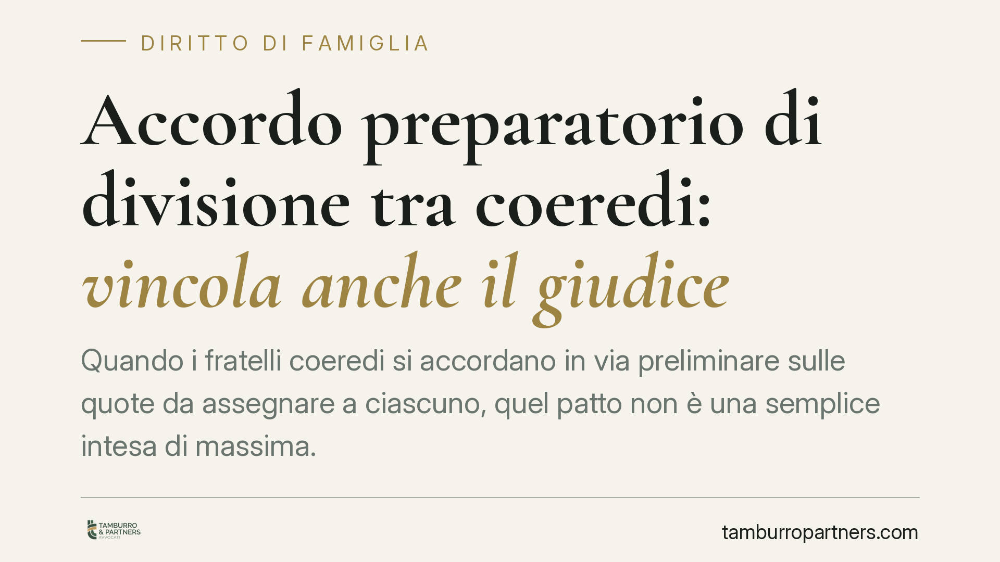

Accordo preparatorio di divisione tra coeredi: vincola anche il giudice
Quando i fratelli coeredi si accordano in via preliminare sulle quote da assegnare a ciascuno, quel patto non è una semplice intesa di massima. La Corte di Cassazione ribadisce un limite preciso al potere del giudice divisorio: egli deve attuare la volontà delle parti, non sostituirla. Chi gestisce una divisione ereditaria deve sapere che gli accordi preparatori producono effetti giuridici concreti.

Il caso e il principio
La questione riguarda la divisione dell'eredità tra più fratelli coeredi. Prima del giudizio, i condividenti avevano raggiunto un accordo preparatorio sulle porzioni da attribuire a ciascuno. In sede giudiziale, tuttavia, la divisione era stata disposta in modo difforme, assegnando a un condividente una quota superiore a quella pattuita senza prevedere il relativo conguaglio in denaro a favore degli altri.
Il principio affermato è lineare: l'accordo raggiunto tra i coeredi in fase preparatoria è vincolante. Il giudice che procede alla divisione deve rispettare le porzioni fissate dalle parti e non può discostarsene assegnando quote superiori senza il correttivo del conguaglio. Si tratta di un orientamento coerente con la funzione del giudizio divisorio, che attua la volontà dei condividenti là dove questa sia stata validamente espressa.
Inquadramento normativo
La divisione ereditaria è disciplinata dagli articoli 713 e seguenti del Codice civile. L'art. 713 c.c. riconosce a ciascun coerede il diritto di chiedere la divisione; l'art. 718 c.c. stabilisce il diritto di ciascuno a conseguire la propria parte in natura, cioè in beni concreti e non necessariamente in denaro.
Quando l'attribuzione in natura genera porzioni di valore disuguale, interviene l'art. 728 c.c.: la disuguaglianza si compensa con un conguaglio in denaro, cioè una somma che il condividente favorito versa agli altri per riequilibrare le quote. È proprio il conguaglio che la divisione giudiziale aveva omesso di prevedere.
Il vincolo dell'accordo preparatorio discende dall'art. 1372 c.c., secondo cui il contratto ha forza di legge tra le parti. Qui occorre però una precisazione che la pronuncia richiede di cogliere: un conto è l'accordo meramente preparatorio, con cui i coeredi fissano i criteri e le porzioni da tradurre poi in un atto formale; altro è la divisione amichevole già perfezionata ai sensi dell'art. 764 c.c., che estingue la comunione ereditaria.
Nel primo caso il patto impegna le parti a divisere secondo i criteri concordati e vincola anche il giudice chiamato a darvi attuazione; nel secondo la comunione è già sciolta e non vi è più materia per una divisione giudiziale, salvo i rimedi impugnatori propri dell'atto. La distinzione incide sugli effetti: in entrambi i casi l'intesa produce conseguenze giuridiche, ma di intensità e natura diverse.
Implicazioni pratiche
Per chi affronta una successione con più eredi, la lezione è concreta. Gli accordi raggiunti prima del giudizio non sono reversibili a piacimento né possono essere ignorati dal giudice. Se i fratelli hanno concordato chi prende cosa e con quali eventuali conguagli, quelle condizioni formano il perimetro entro cui la divisione dovrà muoversi.
Questo comporta due conseguenze speculari. Da un lato, chi ha pattuito una porzione con conguaglio a proprio favore ha uno strumento per contestare una divisione che gliela neghi. Dall'altro, chi ha sottoscritto un accordo contando di rinegoziarlo in giudizio rischia di trovarlo opponibile.
L'assegnazione di una quota di valore superiore senza conguaglio determina un vantaggio patrimoniale privo di titolo: una porzione in più che nessuno ha pagato. È esattamente lo squilibrio che la disciplina dei conguagli è chiamata a correggere.
Cosa fare in concreto
- Metti per iscritto ogni intesa sulle porzioni, specificando valori dei beni ed eventuali conguagli dovuti: l'accordo verbale è più difficile da provare e da far valere.
- Qualifica correttamente l'atto: verifica se si tratta di un accordo preparatorio o di una divisione già perfezionata, perché gli effetti e i rimedi differiscono.
- Fai stimare i beni da un tecnico prima di accettare una porzione: solo conoscendo i valori reali si valuta se un conguaglio è dovuto e in quale misura.
- Controlla il progetto di divisione proposto in giudizio e confrontalo con quanto pattuito: se le quote assegnate superano quelle concordate senza conguaglio, è opportuno valutare l'opportunità di contestarlo tempestivamente.
- Agisci nei termini: le facoltà di impugnazione e contestazione del progetto divisionale sono soggette a scadenze processuali che, una volta decorse, non si recuperano.
Nota sulla fonte
Il riferimento all'ordinanza citata dalla fonte giornalistica reca una datazione (2026) che, alla data di redazione, non risulta verificabile. Il principio esposto è comunque conforme all'orientamento consolidato in materia di divisione ereditaria e di efficacia vincolante degli accordi tra condividenti. Prima di assumere decisioni, è opportuno accertare gli estremi esatti della pronuncia.
---
Contributo informativo a cura di Tamburro & Partners - Avv. Giuseppe Tamburro. Non costituisce parere legale.
Ogni famiglia ha il suo equilibrio.
Separazione, divorzio, affidamento, assegno: se vuoi un confronto riservato su una specifica situazione, scrivi allo studio. Ti rispondiamo entro un giorno lavorativo.